Operating Documentation
Direction 5193574-800, Rev# 22
LightSpeed 7.X Service Methods
Module Version 3.0, Version Date 8/6/12
Operating Documentation |
| Required Persons | Preliminary Reqs | Procedure | Finalization |
|---|---|---|---|
| 1 | Not Applicable | 45 - 60 | 10 mins |
This document describes and illustrates the Product Locator feature and the procedure for completing the entry of Product Locator information. Product Locator information consists of Certified Components and Components (Both Hardware and Software) supplied with Product Locator Cards. This procedure shall be performed at the end of the installation process of the system and used periodically during service activities through the life of the System.
Term Definitions:
Baseline - a record of part information at a point in time.
Certified Component - A part of the CT scanner that is documented as an item whose location and use must be known (i.e. where is the product located?).
Common Service Desktop (CSD) - Launching point for Service Tools.
eGIB - Global Installed Base. Database used to record serial number information for the purpose of determining FMI applicability.
History - a change in a part’s identification
Login - establish user identification for the purpose of recording who changed a part.
Part - alias for component.
Product Locator - identifying the component (serial number) and recording where the component is in use (System ID).
Functional Description:
Component identification is accomplished through serial numbers and model numbers. This information is provided with the components either from the Manufacturing facility or from any replacement part. This procedure provides a means of updating the component identification information as the parts are installed or changed. At any appropriate time, the Service personal can create or modify the data using a fill-in-the-form design. The resultant data is then written to a database for future recall. To support the needs for Electronic Records, each change of the part’s history requires a User Identification/Login (to record who made the change) and a date (to record when the change was made). The changed information is then added to the database and does not erase any existing data. Part history information can be reviewed on the scanner using the Common Service Desktop (CSD) interface. Additional permanent records can be created by selecting the Baseline operation. These Baseline records can also be reviewed from the CSD.
| Condition | Reference | Effectivity |
|---|---|---|
Gather all PLC (Product Locator Cards) supplied with System. The information obtained from these cards will be entered into the System’s Product Locator database. | - | - |
The CT System hardware should be in good working order, but a functioning Operator Console (Host Computer) is a must to accomplish Product Locator setup. | - | - |
Only trained service personnel should service the GE CT Scanner. | - | - |
Follow and perform this section of the procedure for initial setup of Product Locator preferably during installation. If Product Locator has been setup previously and is in need of maintenance, skip to Replace, Update or Remove: Product Locator Maintenance.
Access the Product Locator Feature
To access the Product Locator feature, select the Product Locator link on the [Replacement Tab] of the from the Common Service Desktop.
Illustration 1: Product Locator Link in CSD
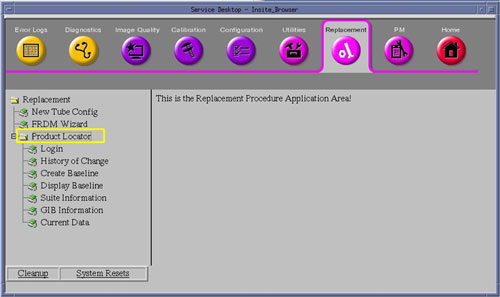
Click on the Product Locator link.
Select Login Link in Product Locator Menu of CSD
Click on the Login link. The Login page will appear.
Illustration 2: Product Locator Login Page
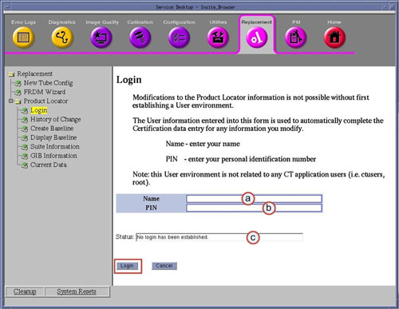
| Item | Description | Action | Data Entry or Display Comments |
| a | Name | Enter Service personal name | (Free Form Text) Preferably Given Name followed by Surname/Family |
| b | PIN | Create or Enter a PIN (password) | (Free Form Text ) Any, suggest GEHC employees enter SSO |
| c | Status | Shows status of Login | No login has been established or Login Is valid, data modification is allowed |
| NOTE: | The use of Login Credentials aides in the identification
of individuals entering information into the Product Locator feature
as well as preventing accidental changes. Login credentials are maintained on the system for 24 hours, then automatically expire. Once expired, the credentials must be recreated. Login can be disabled and erased by selecting the [Cancel] button on the bottom of the Login page. Do not use someone else’s login credentials, check login Status and if necessary disable login first. |
Enter Name (a). Click in Name field and type Service Persons name. Preferably Given Name followed by Surname/Family.
Enter PIN (b). Click in PIN field and type Service Persons PIN (password).
Click the [Login] button at the bottom of the Login page.
Click the [OK] button when the Login Confirmation Pop-up window appears.
Illustration 3: Login Confirmation Pop-up Window
Select Suite Information Link in Product Locator Menu of CSD
Click on the Suite Information link. The Suite Information page will appear.
Illustration 4: Product Locator Suite Information Page
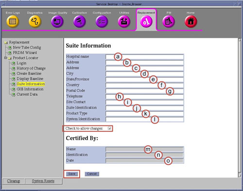
| Item | Description | Action | Data Entry or Display Comments |
| a | Hospital Name | Enter Hospital name. | (Free Form Text) |
| b | Address | Enter Hospital Address | (Free Form Text) |
| c | Address | Enter Hospital Address (continued) | (Free Form Text) |
| d | City | Enter City Name | (Free Form Text) |
| e | State / Province | Enter State or province Name | (Free Form Text) |
| f | Country | Enter Country Name | (Free Form Text) |
| g | Postal Code | Enter Postal / ZIP Code | (Free Form Text) |
| h | Telephone | Enter Hospital Phone Number | (Free Form Text) Preferably Site Contact phone number |
| i | Site Contact | Enter Site Contact Name | (Free Form Text) Preferably Site’s department Administrator or Chief Technologist. |
| j | Suite Identification | Enter Suite Identification | (Free Form Text) Typically room name or Site’s name assigned to system. |
| k | Product Type | Enter System Type | (Free Form Text) Preferably System Name and Model (Ex: LightSpeed VCT or Discovery CT750 HD) |
| l | System Identification | Enter System ID | (Free Form Text) Preferably Site’s Sys ID number created by GEHC Service Operations |
| m | Name | Non-editable | Displays Login Name |
| n | Identification | Non-editable | Displays “**********” (PIN is hidden) |
| o | Date | Non-editable | Displays System Date and time of Suite Information page was entered |
Click the Check to Allow Change box to enable data entry. The fields displayed can not be modified until this box has been checked.
Click in each of the fields (a – l) shown above and type in the requested information.
| NOTE: | Fields (m-o) will be blank and non-editable on first display of the Product Locator Suite Information page. Upon form completion and save of this page, this data will be automatically completed with the login credentials. |
Click the [Save] button at the bottom of the Suite Information page.
Click the [OK] button when the Confirmation Pop-up window appears.
Illustration 5: Confirmation Pop-up Window
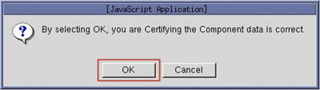
Select GIB Information Link in Product Locator Menu of CSD
Click on the GIB Information link. The GIB Information page will appear.
Illustration 6: Product Locator GIB Information Page
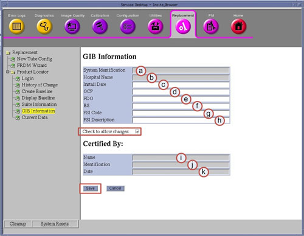
| Item | Description | Action | Data Entry or Display Comments |
| a | System Identification | Non-editable | Data retrieved from Suite Information page previously completed. Preferably Site’s Sys ID number created by GEHC Service Operations |
| b | Hospital Name | Non-editable | Data retrieved from Suite Information page previously completed. |
| c | Install Date | Enter System Installation Date | (Free Form Text) Preferably entered in following format: YYYY-DD-MM. (Ex: 2011-10-02) |
| d | OCP | Enter Order Control Point | (Free Form Text) Order Control Point Number (Assigned by GEHC - Describes modality of sales order) |
| e | FDO | Enter FDO (GON) Number | (Free Form Text) Future Delivery or Global Order Number (Assigned by GEHC) |
| f | B/S | Enter B/S Number | (Free Form Text) Billing Series Number (Assigned by GEHC) |
| g | PSI Code | Enter PSI Code | (Free Form Text) System Type Code (Assigned by GEHC) |
| h | PSI Description | Enter PSI Code Description | (Free Form Text) System Type Description (Assigned by GEHC) |
| i | Name | Non-editable | Displays Login Name |
| j | Identification | Non-editable | Displays “**********” (PIN is hidden) |
| k | Date | Non-editable | Displays System Date and time of GIB Information page was entered |
Click the Check to Allow Change box to enable data entry. The fields displayed can not be modified until this box has been checked.
Click in each of the fields (c – h) shown above and type in the requested information.
| NOTE: | Fields (i-k) will be blank and non-editable on first display of the Product Locator GIB Information page. Upon form completion and save of this page, this data will be automatically completed with the login credentials. |
Click the [Save] button at the bottom of the GIB Information page.
Click the [OK] button when the Confirmation Pop-up window appears.
Illustration 7: Confirmation Pop-up Window
Select History of Change Link in Product Locator Menu of CSD
Click on the History of Change link. The History of Change page will appear.
Illustration 8: Product Locator History of Change Page
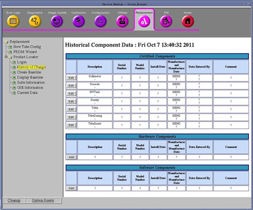
| NOTE: | The History of Change page is divide into three sections: Illustration 9: History of Change Page - Certified Components Section 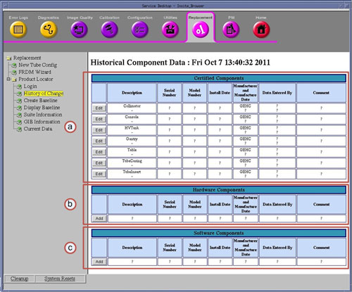
Information (data) required in the above fields of the History of Change page will be taken from Product Locator Cards (PLC) supplied with system or Option. Illustration 10: Example Product Locator Card 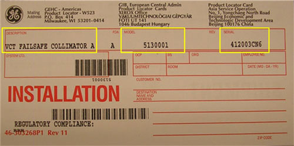 |
Enter PLC information for each Certified Component in the Certified Component Section
| NOTE: | Certified Components shown in this section have been predefined and are permanent entries in the Product Locator Database. |
Click the [Edit] button for each of the Certified Components.
Illustration 11: Edit of Certified Components Data
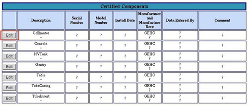
Enter the following information on the Certified Component Information page that appears.
Illustration 12: Component Information Page
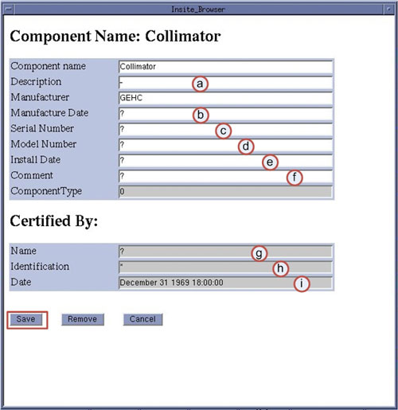
| Item | Description | Action | Data Entry or Display Comments |
| a | Description | Enter Description as shown on PLC | (Text– No Spaces, just alphanumeric & dash “-” ) |
| b | Manufacture Date | Enter Manufacture Date, found on Rating Plate mounted to Certified Component | (Text– No Spaces, just alphanumeric & dash “-” ) Preferably entered in following format: YYYY-DD-MM. (Ex: 2011-10-02) |
| c | Serial Number | Enter Serial Number as shown on PLC | (Text– No Spaces, just alphanumeric & dash “-” ) |
| d | Model Number | Enter Model Number as shown on PLC | (Text– No Spaces, just alphanumeric & dash “-” ) |
| e | Install Date | Enter System Install or Component Replacement Date | (Text– No Spaces, just alphanumeric & dash “-” ) Preferably entered in following format: YYYY-DD-MM. (Ex: 2011-10-02) |
| f | Comments | Enter Comments | (Free Form Text) Optionally required, but suggest entering word “Install” for initial entry. |
| g | Name | Non-editable | Displays Login Name |
| h | Identification | Non-editable | Displays “**********” (PIN is hidden) |
| i | Date | Non-editable | Displays System Date and time of Component Information page was entered |
| NOTE: | Fields (g-i) will be blank and non-editable on first display of the Component Information page. Upon form completion and save of this page, this data will be automatically completed with the login credentials. |
Click the [Save] button at the bottom of the Component Information page.
| NOTE: | After clicking Save on the Component Information page, a Confirmation Pop-up window will appear. It is important to note at this time by clicking OK, one creates a permanent record entry into the Product Locator database. Take time to confirm correct information has been entered. |
Click the [OK] button when the Confirmation Pop-up window appears.
Illustration 13: Add Component Confirmation Pop-up Window
Close the Following Component Was Modified window.
If desired, click on the History of Change link again to refresh the display.
Continue adding Certified Component Information until all Certified Components have been updated.
Enter PLC information for Hardware Components section
| NOTE: | Enter additional PLCs in this section, including Accessories and Options that have hardware. |
Click the [Add] button to enter information for the remainder of the PLCs that are for Hardware related items (ex: Hardware or Software Options that come with Hardware) in Product Locator.
Illustration 14: Add of Hardware Components Data
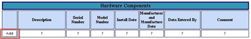
Enter the following information on the Hardware Component Information page that appears.
Illustration 15: Hardware Component Information Page
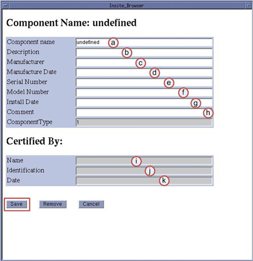
| Item | Description | Action | Data Entry or Display Comments |
| a | Component Name | Enter Name | (Text– No Spaces, just alphanumeric & dash “-” ) Note: Replace “undefined” with Component Name |
| b | Description | Enter Description as shown on PLC | (Text– No Spaces, just alphanumeric & dash “-” ) |
| c | Manufacturer | Enter Manufacturer | (Text– No Spaces, just alphanumeric & dash “-” ) Most cases will be GEHC |
| d | Manufacture Date | Enter Manufacture Date, found on Rating Plate mounted to Certified Component | (Text– No Spaces, just alphanumeric & dash “-” ) Preferably entered in following format: YYYY-DD-MM. (Ex: 2011-10-02) |
| e | Serial Number | Enter Serial Number as shown on PLC | (Text– No Spaces, just alphanumeric & dash “-” ) |
| f | Model Number | Enter Model Number as shown on PLC | (Text– No Spaces, just alphanumeric & dash “-” ) |
| g | Install Date | Enter System Install or Component Replacement Date | (Text– No Spaces, just alphanumeric & dash “-” ) Preferably entered in following format: YYYY-DD-MM. (Ex: 2011-10-02) |
| h | Comments | Enter Comments | (Free Form Text) Not required, but suggest entering word “Install” for initial entry. |
| i | Name | Non-editable | Displays Login Name |
| j | Identification | Non-editable | Displays “**********” (PIN is hidden) |
| k | Date | Non-editable | Displays System Date and time of Component Information page was entered |
| NOTE: | Fields (i-k) will be blank and non-editable on first display of the Component Information page. Upon form completion and save of this page, this data will be automatically completed with the login credentials. |
Click the [Save] button at the bottom of the Component Information page.
Click the [OK] button when the Confirmation Pop-up window appears.
Illustration 16: Add Component Confirmation Pop-up Window
Close the Following Component Was Modified window.
Click on the History of Change link again to refresh the display.
Continue adding Hardware Component Information until all Hardware Options have been entered.
Enter PLC information for Software Components section
| NOTE: | Enter only Software Options PLCs that do not include hardware. |
Click the [Add] button to enter information for the remainder of the PLC Cards that are for Software related items (ex: Software Options) in Product Locator.
Illustration 17: Add of Software Components Data
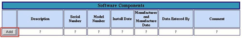
Enter the following information on the Software Component Information page that appears.
Illustration 18: Software Component Information Page
| Item | Description | Action | Data Entry or Display Comments |
| a | Component Name | Enter Name | (Text– No Spaces, just alphanumeric & dash “-” ) Note: Replace “undefined” with Component Name |
| b | Description | Enter Description as shown on PLC | (Text– No Spaces, just alphanumeric & dash “-” ) |
| c | Manufacturer | Enter Manufacturer | (Text– No Spaces, just alphanumeric & dash “-” ) Most cases will be GEHC |
| d | Manufacture Date | Enter Manufacture Date, found on Rating Plate mounted to Certified Component | (Text– No Spaces, just alphanumeric & dash “-” ) Preferably entered in following format: YYYY-DD-MM. (Ex: 2011-10-02) |
| e | Serial Number | Enter Serial Number as shown on PLC | (Text– No Spaces, just alphanumeric & dash “-” ) |
| f | Model Number | Enter Model Number as shown on PLC | (Text– No Spaces, just alphanumeric & dash “-” ) |
| g | Install Date | Enter System Install or Component Replacement Date | (Text– No Spaces, just alphanumeric & dash “-” ) Preferably entered in following format: YYYY-DD-MM. (Ex: 2011-10-02) |
| h | Comments | Enter Comments | (Free Form Text) Not required, but suggest entering word “Install” for initial entry. |
| i | Name | Non-editable | Displays Login Name |
| j | Identification | Non-editable | Displays “**********” (PIN is hidden) |
| k | Date | Non-editable | Displays System Date and time of Component Information page was entered |
| NOTE: | Fields (i-k) will be blank and non-editable on first display of the Component Information page. Upon form completion and save of this page, this data will be automatically completed with the login credentials. |
Click the [Save] button at the bottom of the Component Information page.
Click the [OK] button when the Confirmation Pop-up window appears.
Illustration 19: Add Component Confirmation Pop-up Window
Close the Following Component Was Modified window.
Click on the History of Change link again to refresh the display.
Continue adding Software Component Information until all Software Options have been entered.
Select Create Baseline Link in Product Locator Menu of CSD
Click on the Create Baseline link. The Create Baseline page will appear.
Illustration 20: Create Baseline Page
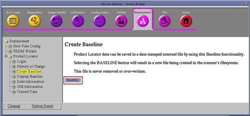
| NOTE: | Each Baseline created becomes a permanent record (report) in the Product Locator database on the system. A baseline shall be created at installation (or first entry of Product Locator information). Optionally, additional baselines may be created but should be used primarily to capture major changes (Ex: System upgrades or Certified Component replacement). |
Click on the [Baseline] button at the bottom of the Create Baseline page.
Click the [OK] button when the Confirmation Pop-up window appears.
Illustration 21: Create Baseline Confirmation Pop-up Window
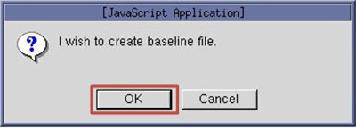
Select Display Baseline Link in Product Locator Menu of CSD
Click on the Display Baseline link. The Display Baseline page will appear.
Illustration 22: Display Baseline Page
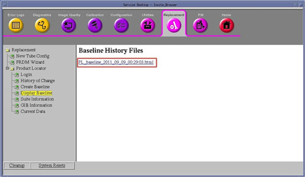
Click most current PL_Baseline_xxxxx_xx_xx file link displayed on Baseline History Files page.
The Baseline Report page will appear.
Illustration 23: Example Baseline Report Page
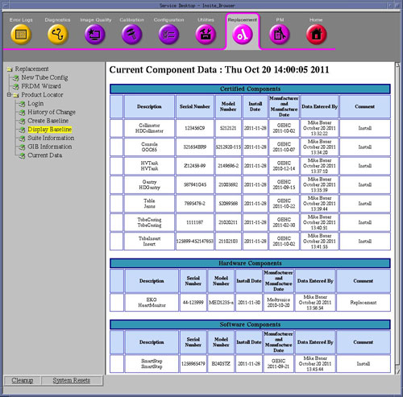
| NOTE: | The Display Baseline page only displays the most current component data, differentiated by the Description field in the database. Old entries and removed components will not appear on this page. |
Review all information to confirm that Product Locator Baseline was created.
| NOTE: | All Baseline files may be reviewed in this manner. |
Close the Baseline Report page
Follow and perform this section of the procedure whenever a Certified Component has been replaced or new Hardware/Software Option or Accessory is added to system.
Access the Product Locator feature by selecting the Product Locator link on the [Replacement Tab] of the from the Common Service Desktop.
Ensure Product Locator Login is established. Click on Login link and check status, login if required.
Click on the History of Change link. The History of Change page will appear.
Click on the appropriate [Edit] button for the Certified Component replaced.
Add new Certified Component information in the Component Information Form that appears, using the information obtained from the Product Locator Card, Part Label and/or Rating Plate supplied with the Certified Component.
Click the [Save] button at the bottom of the Component Information page.
Click the [OK] button when the Confirmation Pop-up window appears.
Close the Following Component Was Modified window.
Click on the History of Change link again to refresh the display.
| NOTE: | The new Certified Component will appear with an [Edit] button and the original entry will still be displayed though no longer editable. Hence a history of all certified components installed on this system is maintained. Certified Components can not be removed from database. |
Access the Product Locator feature by selecting the Product Locator link on the [Replacement Tab] of the from the Common Service Desktop.
Ensure Product Locator Login is established. Click on Login link and check status, login if required.
Click on the History of Change link. The History of Change page will appear.
Click on the appropriate [Add] button in either Hardware or Software Component sections in the History of Change page
Add new Hardware or Software Component in the Component Information Form that appears, using the information obtained from the Product Locator Card, Part Label and/or Rating Plate supplied with the Hardware or Software Option.
Click the [Save] button at the bottom of the Component Information page.
Click the [OK] button when the Confirmation Pop-up window appears.
Close the Following Component Was Modified window.
Click on the History of Change link again to refresh the display.
| NOTE: | The new Hardware or Software Component will appear with an [Edit] button. |
Access the Product Locator feature by selecting the Product Locator link on the [Replacement Tab] of the from the Common Service Desktop.
Ensure Product Locator Login is established. Click on Login link and check status, login if required.
Click on the History of Change link. The History of Change page will appear.
Click on the appropriate [Edit] button in either Hardware or Software Component sections for the hardware or software option to be removed in the History of Change page
Click the [Remove] button at the bottom of the Component Information page.
Click the [OK] button when the Removal Confirmation Pop-up window appears.
Illustration 24: Removal Confirmation Pop-up Window
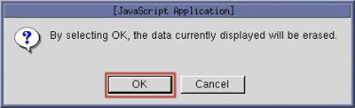
Close the Following Component Was Removed window.
Close the Component Information window.
Click on the History of Change link again to refresh the display.
| NOTE: | The original entry will still be displayed though no longer editable. The entry will have the Comment and Manufacturer fields updated stating the component was removed. Other fields will still have original data displayed, hence a history of all components installed on this system is maintained. |
View Current Data for Product Locator.
Select Current Data Link in Product Locator Menu of CSD. The Current Component Data page will appear.
Illustration 25: Current Component Data Page
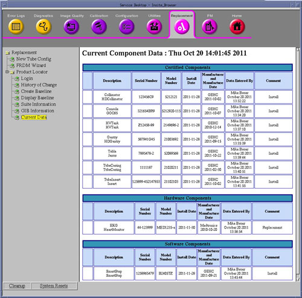
Review all information displayed for completeness.
| NOTE: | The Current Data page only displays the most current component data, differentiated by the Description field in the database. Old entries and removed components will not appear on this page. |
If maintenance (update) activities have taken place, create new Baseline. See procedure for creating a Baseline in Install: Initial Setup and Data Entry for Product Locator, Step 6.
| NOTE: | This step is only required if significant maintenance (update) has been performed (ex: new Certified Component has been entered into Product Locator database). Otherwise the Baseline created earlier in this procedure for first time data entry is sufficient. |